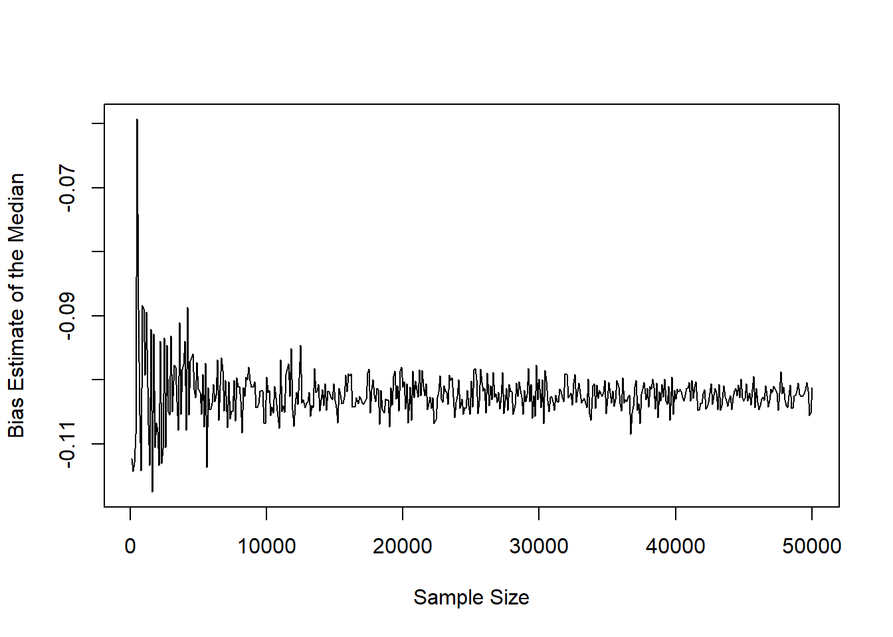

This page is part of the University of Colorado-Anschutz Medical Campus’ BIOS 6618 Recitation collection. To view other questions, you can view the BIOS 6618 Recitation collection page or use the search bar to look for keywords.
Approaches to a Mini-Simulation Study for Estimating Bias
HW 1, Q3b asks us to simulate data for calculating the bias for varying sample sizes from 100 to 100,000 in increments of 100. Since we are only simulating a single sample for each sample size, we really only have one “moving” part to change for each simulation (i.e., the sample size). In this section we will illustrate a few approaches to coding this using both for loops and apply statements. These will be covered in greater details over the coming weeks, but this may serve as a helpful example.
To avoid exactly repeating the homework problem, let’s answer the same question for a different distribution with the range of sample sizes being from 100 to 50,000. Let’s see what happens if we simulate our data from an exponential distribution with a rate of \(\lambda\). Its mean is \(\frac{1}{\lambda}\), but the median is a bit harder to intuitively know and is \(\frac{\ln(2)}{\lambda}\).
for loops with vectors
Let’s start by walking through an example where we use a for loop to loop through our sample sizes.
Code
# Step 1: Set the seed for reproducibilityset.seed(515)# Step 2: Define objects of interestsample_size <-seq(from=100, to=50000, by=100) # generate vector from 100 to 100,000 in increments of 100 using the seq functionlambda <-3# set lambda for our exponential distribution to be easily updated if we wanted to look at a different scenario# Step 3: Initialize (i.e., create) vector or other object to save our resultsbias_median <-rep(NA, times=length(sample_size))# Step 4: Loop through a chunk of code to calculate our biasfor(i in1:length(sample_size)){ sim <-rexp(n=sample_size[i], rate=lambda) # simulate a sample of sample_size[i] with rate=lambda, where [i] is pulling the "ith" element from our sample size vector sample_size median_sim <-median(sim) # calculate the median of each sim bias <- median_sim - (1/lambda) # calculate the bias of the median in estimating the mean bias_median[i] <- bias # save our results}bias_median[c(1:3,498:500)] # print the first and last 3 bias estimates
We can then create a plot of our resulting bias estimates over the different sample sizes:
Code
plot(x=sample_size, y=bias_median, xlab='Sample Size', ylab='Bias Estimate of the Median', type='l')

Given that we know that the mean is not equal to the median for the exponential distribution, we shouldn’t be too surprised to see that the median would be a biased estimator to use in place of the median! However, even if we did not know the true theoretical mean and median for the distribution, this simulation gives us evidence that they are not the same.
While still biased, we can note that the estimator is still consistent as the sample size increases (i.e., the lines seems to be converging to a consistent estimate, such as \(\frac{\ln(2)}{\lambda} - \frac{1}{\lambda} = \frac{\ln(2) - 1}{\lambda}\), which in our case is \(\frac{\ln(2) - 1}{3}= -0.102\).
for loops with a matrix
Let’s check out an example where we also save the sample size and median estimate from each simulated sample size by using a matrix:
Code
# Step 1: Set the seed for reproducibilityset.seed(515)# Step 2: Define objects of interestsample_size <-seq(from=100, to=50000, by=100) # generate vector from 100 to 100,000 in increments of 100 using the seq functionlambda <-3# set lambda for our exponential distribution to be easily updated if we wanted to look at a different scenario# Step 3: Instead of saving the bias, let's also save the median for each simulation by using a matrixbias_median_mat <-matrix(nrow=length(sample_size), ncol=3) # could also specify names for the rows and/or columns# Step 4: Loop through a chunk of code to calculate our biasfor(i in1:length(sample_size)){ sim <-rexp(n=sample_size[i], rate=lambda) # simulate a sample of sample_size[i] with rate=lambda, where [i] is pulling the "ith" element from our sample size vector sample_size median_sim <-median(sim) # calculate the median of each sim bias <- median_sim - (1/lambda) # calculate the bias of the median in estimating the mean bias_median_mat[i,] <-c(sample_size[i], bias, median_sim) # save our results for sample size (1st column of matrix), bias (second column), and median (3rd column)}# Let's view the first 3 and last 3 rows of the matrix and plot the estimatesbias_median_mat[c(1:3, 498:500),]
plot(x=bias_median_mat[,1], y=bias_median_mat[,2], xlab='Sample Size', ylab='Bias Estimate of the Median', type='l')
Notice how the bias estimates and the figure are identical for our approach saving the results in a vector since we set the seed!
apply Statements
This is definitely a bit more advanced, and we’ll dig into this in a few more weeks. But to start exposing you to different approaches, we can use apply statements to facilitate the simulation study!
Generally we will need to write or use an existing function in R (to be discussed in greater detail in the future). In our case, we can modify the code in our for loop above:
Code
my_exp_sim <-function(n, lambda=3){### Function simulate exponential data# n: sample size to use# lambda: lambda parameter to use in simulating data sim <-rexp(n=n, rate=lambda) # simulate a sample of n with rate=rate median_sim <-median(sim) # calculate the median of each sim bias <- median_sim - (1/lambda) # calculate the bias of the median in estimating the meanreturn(c(sample_size=n, bias=bias, median=median_sim)) # estimates to return from the function}my_exp_sim(n=10) # will use rate=3 by default since that is what I specified in the function above
sample_size bias median
10.0000000 -0.1669902 0.1663431
Code
my_exp_sim(n=10, lambda=5) # we can also change the rate to whatever we want
sample_size bias median
10.00000000 0.03291594 0.23291594
Now let’s try using sapply which will more efficiently “loop” through our vectors and apply it to the function:
Code
set.seed(515)# Note: the first part of sapply (X) "seq(from=100, to=50000, by=100)" is the vector of values we wish to work through# Note: the second part of sapply (FUN) "function(x) my_exp_sim(n=x, rate=3)" takes the values from our "X" and uses them as the value for "x", which in our case represents our sample sizebias_median_sapply <-sapply(X =seq(from=100, to=50000, by=100), FUN =function(x) my_exp_sim(n=x, lambda=3))bias_median_sapply <-t(bias_median_sapply) # sapply creates results that are stored in a matrix/array that is 3 rows and 500 columns, I like to transpose the matrix to have 500 rows and 3 columns to both better see the data and because I more intuitively think of each row as a new simulation myselfbias_median_sapply[c(1:3,498:500),]
plot(x=bias_median_sapply[,1], y=bias_median_sapply[,2], xlab='Sample Size', ylab='Bias Estimate of the Median', type='l')
Source Code
---title: "Approaches to Generating Data for a Simulation: for loops and apply Functions"author: name: Alex Kaizer roles: "Instructor" affiliation: University of Colorado-Anschutz Medical Campustoc: truetoc_float: truetoc-location: leftformat: html: code-fold: show code-overflow: wrap code-tools: true---```{r, echo=F, message=F, warning=F}library(kableExtra)library(dplyr)```This page is part of the University of Colorado-Anschutz Medical Campus' [BIOS 6618 Recitation](/recitation/index.qmd) collection. To view other questions, you can view the [BIOS 6618 Recitation](/recitation/index.qmd) collection page or use the search bar to look for keywords.# Approaches to a Mini-Simulation Study for Estimating BiasHW 1, Q3b asks us to simulate data for calculating the bias for varying sample sizes from 100 to 100,000 in increments of 100. Since we are only simulating a single sample for each sample size, we really only have one "moving" part to change for each simulation (i.e., the sample size). In this section we will illustrate a few approaches to coding this using both `for` loops and `apply` statements. These will be covered in greater details over the coming weeks, but this may serve as a helpful example.To avoid exactly repeating the homework problem, let's answer the same question for a different distribution with the range of sample sizes being from 100 to 50,000. Let's see what happens if we simulate our data from an [exponential distribution](https://en.wikipedia.org/wiki/Exponential_distribution) with a rate of $\lambda$. Its mean is $\frac{1}{\lambda}$, but the median is a bit harder to intuitively know and is $\frac{\ln(2)}{\lambda}$.## `for` loops with vectorsLet's start by walking through an example where we use a `for` loop to loop through our sample sizes.```{r}# Step 1: Set the seed for reproducibilityset.seed(515)# Step 2: Define objects of interestsample_size <-seq(from=100, to=50000, by=100) # generate vector from 100 to 100,000 in increments of 100 using the seq functionlambda <-3# set lambda for our exponential distribution to be easily updated if we wanted to look at a different scenario# Step 3: Initialize (i.e., create) vector or other object to save our resultsbias_median <-rep(NA, times=length(sample_size))# Step 4: Loop through a chunk of code to calculate our biasfor(i in1:length(sample_size)){ sim <-rexp(n=sample_size[i], rate=lambda) # simulate a sample of sample_size[i] with rate=lambda, where [i] is pulling the "ith" element from our sample size vector sample_size median_sim <-median(sim) # calculate the median of each sim bias <- median_sim - (1/lambda) # calculate the bias of the median in estimating the mean bias_median[i] <- bias # save our results}bias_median[c(1:3,498:500)] # print the first and last 3 bias estimates```We can then create a plot of our resulting bias estimates over the different sample sizes:```{r}plot(x=sample_size, y=bias_median, xlab='Sample Size', ylab='Bias Estimate of the Median', type='l')```Given that we know that the mean is not equal to the median for the exponential distribution, we shouldn't be too surprised to see that the median would be a *biased* estimator to use in place of the median! However, even if we did not know the true theoretical mean and median for the distribution, this simulation gives us evidence that they are not the same.While still biased, we can note that the estimator is still consistent as the sample size increases (i.e., the lines seems to be converging to a consistent estimate, such as $\frac{\ln(2)}{\lambda} - \frac{1}{\lambda} = \frac{\ln(2) - 1}{\lambda}$, which in our case is $\frac{\ln(2) - 1}{3}= -0.102$.## `for` loops with a matrixLet's check out an example where we also save the sample size and median estimate from each simulated sample size by using a matrix:```{r}# Step 1: Set the seed for reproducibilityset.seed(515)# Step 2: Define objects of interestsample_size <-seq(from=100, to=50000, by=100) # generate vector from 100 to 100,000 in increments of 100 using the seq functionlambda <-3# set lambda for our exponential distribution to be easily updated if we wanted to look at a different scenario# Step 3: Instead of saving the bias, let's also save the median for each simulation by using a matrixbias_median_mat <-matrix(nrow=length(sample_size), ncol=3) # could also specify names for the rows and/or columns# Step 4: Loop through a chunk of code to calculate our biasfor(i in1:length(sample_size)){ sim <-rexp(n=sample_size[i], rate=lambda) # simulate a sample of sample_size[i] with rate=lambda, where [i] is pulling the "ith" element from our sample size vector sample_size median_sim <-median(sim) # calculate the median of each sim bias <- median_sim - (1/lambda) # calculate the bias of the median in estimating the mean bias_median_mat[i,] <-c(sample_size[i], bias, median_sim) # save our results for sample size (1st column of matrix), bias (second column), and median (3rd column)}# Let's view the first 3 and last 3 rows of the matrix and plot the estimatesbias_median_mat[c(1:3, 498:500),]plot(x=bias_median_mat[,1], y=bias_median_mat[,2], xlab='Sample Size', ylab='Bias Estimate of the Median', type='l')```Notice how the bias estimates and the figure are identical for our approach saving the results in a vector since we set the seed!## `apply` StatementsThis is definitely a bit more advanced, and we'll dig into this in a few more weeks. But to start exposing you to different approaches, we can use `apply` statements to facilitate the simulation study!Generally we will need to write or use an existing *function* in R (to be discussed in greater detail in the future). In our case, we can modify the code in our `for` loop above:```{r}my_exp_sim <-function(n, lambda=3){### Function simulate exponential data# n: sample size to use# lambda: lambda parameter to use in simulating data sim <-rexp(n=n, rate=lambda) # simulate a sample of n with rate=rate median_sim <-median(sim) # calculate the median of each sim bias <- median_sim - (1/lambda) # calculate the bias of the median in estimating the meanreturn(c(sample_size=n, bias=bias, median=median_sim)) # estimates to return from the function}my_exp_sim(n=10) # will use rate=3 by default since that is what I specified in the function abovemy_exp_sim(n=10, lambda=5) # we can also change the rate to whatever we want```Now let's try using `sapply` which will more efficiently "loop" through our vectors and apply it to the function:```{r}set.seed(515)# Note: the first part of sapply (X) "seq(from=100, to=50000, by=100)" is the vector of values we wish to work through# Note: the second part of sapply (FUN) "function(x) my_exp_sim(n=x, rate=3)" takes the values from our "X" and uses them as the value for "x", which in our case represents our sample sizebias_median_sapply <-sapply(X =seq(from=100, to=50000, by=100), FUN =function(x) my_exp_sim(n=x, lambda=3))bias_median_sapply <-t(bias_median_sapply) # sapply creates results that are stored in a matrix/array that is 3 rows and 500 columns, I like to transpose the matrix to have 500 rows and 3 columns to both better see the data and because I more intuitively think of each row as a new simulation myselfbias_median_sapply[c(1:3,498:500),]plot(x=bias_median_sapply[,1], y=bias_median_sapply[,2], xlab='Sample Size', ylab='Bias Estimate of the Median', type='l')```